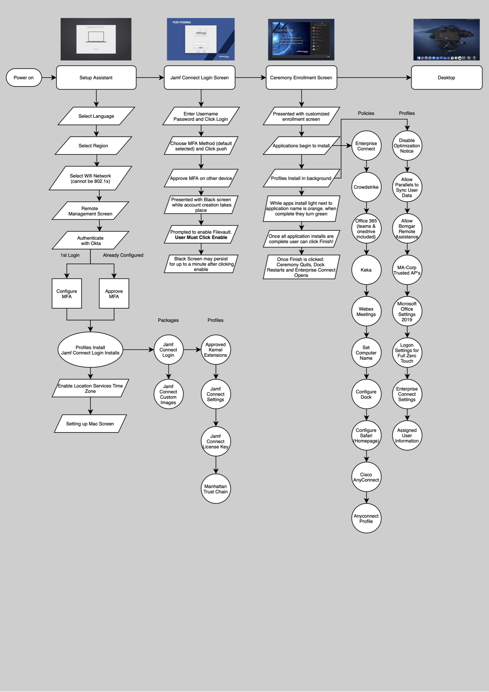
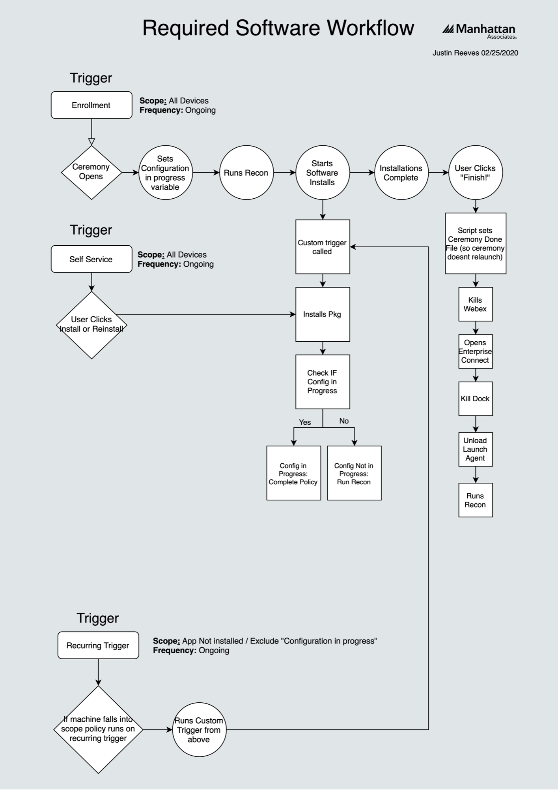
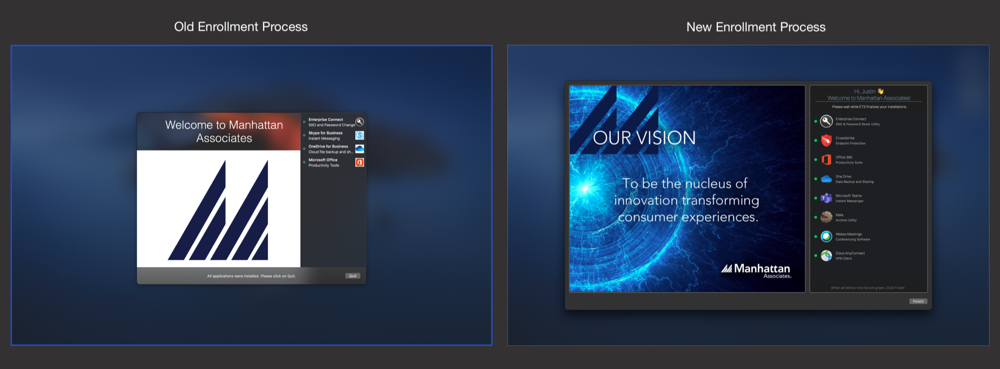
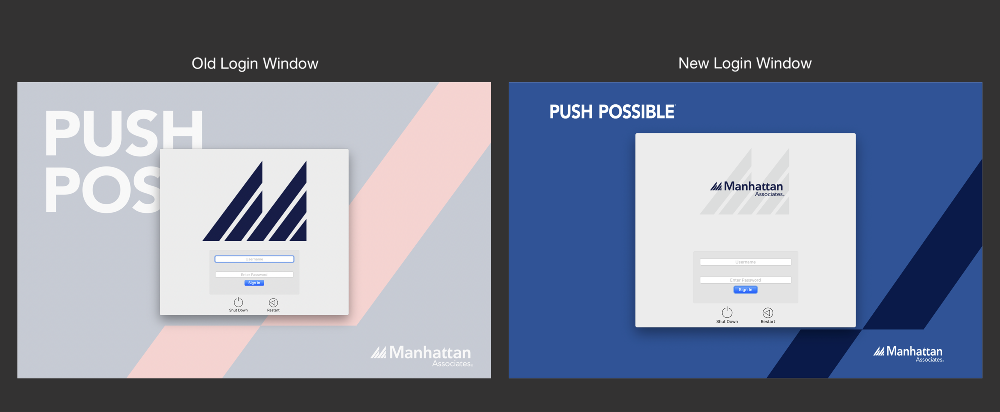

Justin Reeves
Justin ReevesMDM Upgrade
A full rebuild of the company’s Mac management environment, from the first boot to the login screen.
At Manhattan Associates I built an entirely new MDM workflow for the company. I brought Octory, Jamf Pro, Jamf Connect, and other tools together into one streamlined environment for both IT and employees.
Zero-touch enrollment
I designed and documented a zero-touch workflow. Employees sign in with Okta during macOS Setup Assistant, a local account is created from their Okta credentials, FileVault is turned on, and they can watch what’s installing on their Mac in real time.
I used this documentation to train other technicians on how enrollment works and how to troubleshoot it when a step fails.

Required software, one policy each
To cut down on policy changes every time required software updated, I built a set of base policies in Jamf Pro. Every required app got one base policy, and all Self Service, reinstall, force install, and update policies call it with a custom command.
When an update ships, you change one base policy and everything else picks it up.

A better first login
The company was using SplashBuddy to tell employees what was installing at first login. I replaced it with Octory, customized it in Xcode, and published it as an in-house app through Jamf Pro. It greets each person by name, gives specific instructions, and shows what’s installing and whether anything failed.

Login screen with Okta and MFA
I upgraded the Jamf Connect login screen and connected it to Okta with MFA. I worked with the marketing team on images and logos to match the brand, which also built relationships across departments and made sign-in simpler for everyone.
